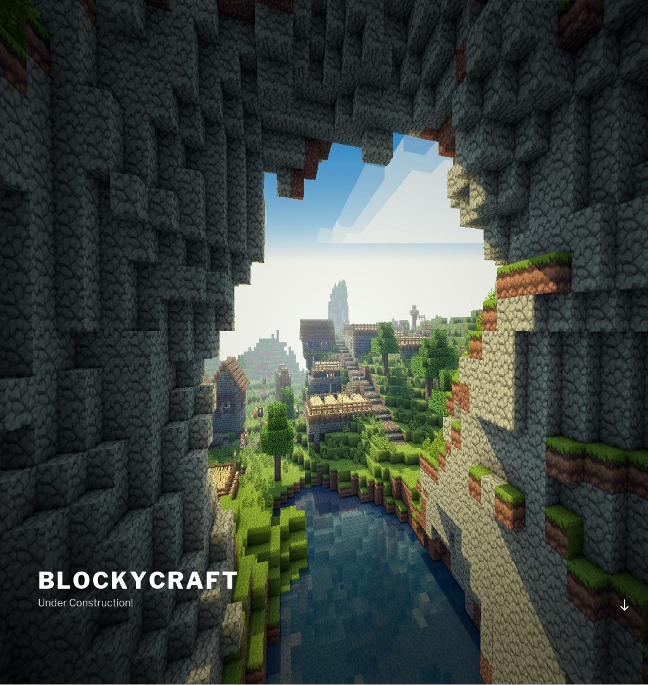

<html>
<head>
<title>HTTP-ScreenShot-Outfile</title>
</head>
<body>


<div style="border: 3px #7DA7FC solid;padding:10px;margin:10px;background-color:#E1E1E1">
<h1><u>10.10.10.37:80</u></h1>
 <h2><u>HTTP Headers</u></h2>
<pre>
Date: Wed, 13 Nov 2019 20:26:05 GMT
Server: Apache/2.4.18 (Ubuntu)
Link: <http://10.10.10.37/index.php/wp-json/>; rel="https://api.w.org/"
Connection: close
Content-Type: text/html; charset=UTF-8

(Request type: HEAD)
</pre>
<h2><u>Screenshots</u></h2>
<p><a href="http://10.10.10.37:80" target="_blank">http://10.10.10.37:80</a></br></p>
</div>
</body>
</html>